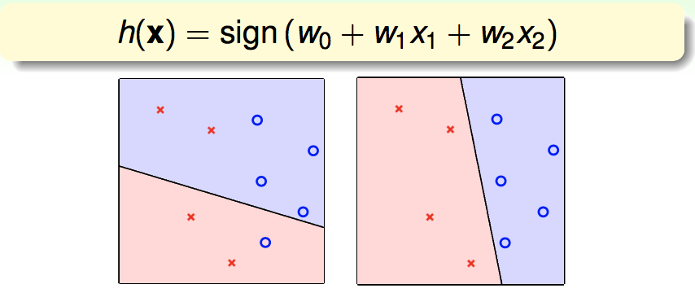
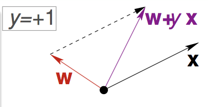

目录
- Perception Hypothesis Set
- Perception Learning Algorithm(PLA)
- Guarantee of PLA
- Non-Separable Data
Perception Hypothesis Set
考虑这样一个实例，我们有银行客户数据，现在想帮助银行判断应该给哪些客户发放信用卡。
这是一个典型的二分类问题，根据第一讲的内容，我们的思路是：通过算法 $\mathcal{A}$，在假设空间$\mathcal{H}$中，根据样本数据$\mathcal{D}$，选择最好的假设作为$g$,选择标准是$ g \approx f $。所以首先我们需要确定我们的假设空间$\mathcal{H}$,这里我们选定的假设空间是“Perceptron”:
向量$\textbf{x}$是客户的特征向量，给每个特征以权重，然后相加，如果大于我们的阈值就记作正类，如果小于就记作负类，这就是Perceptron的思想。
为了便于书写，我们稍作化简，以向量的形式表示Perceptron:
那么我们的假设$h$到底长什么样，考虑简单的二维情形，我们的假设$h$就是一条将我们的正类负类分开（不一定能完全分开）的直线

刚刚的图中只是我们假设空间$\mathcal{H}$中两个Perceptron,实际上，在二维情况下，我们的Perceptron假设空间包含无数个Perceptron,每一个不同的权重向量$\textbf{w}$都对应一个hypothesis,即平面上的无数条直线都是我么的hypothesis.那么我们该怎么从无数条直线中选择那条最好的直线呢？即如何从$\mathcal{H}$中选择最好的$g$使$g \approx f$?这就是接下来要介绍的PLA。
Perception Learning Algorithm(PLA)
PLA要做的事是：从某一个权重向量$\textbf{w}_0$开始，然后根据我们的数据集$\mathcal{D}$来不断修正这条直线的错误直到没有点被错误分类，然后返回这个最后的$\textbf{w}$，这就是我们的$g$：
可是PLA为什么能学习到那条最好的直线呢？从直观上理解，我们的直线所犯的错无非两类：
- 把正类误分为负类
- 把负类误分为正类
从几何上理解，两个向量的夹角大于90度则积为负，所以我们的直线把正类误分为负类就是因为$\textbf{w}$和$\textbf{x}$的夹角太大，我们把$\textbf{w}$向$\textbf{x}$稍微拉一下，这就对应算法中我们对$\textbf{w}$的一次更新

同样，对于把负类误分为正类的情况，也可这样理解：
$$ h(\textbf{x})=sign\left(\left(\sum_{i=1}^{d} w_ix_i\right)\right) $$
Guarantee of PLA
Non-Separable Data
算法：
对于$t=0,1,\cdots$
1.找到一个错误分类的点$(\textbf{x}_{n(t)},y_{n(t)})$,即
$$ sign\left(\textbf{w}_t^T\right)\neq y_{n(t)} $$
2.更新$w_t$:
$$ \textbf{w}_{t+1} \leftarrow \textbf{w}_t+y_{n(t)}\textbf{x}_{n(t)}}$$